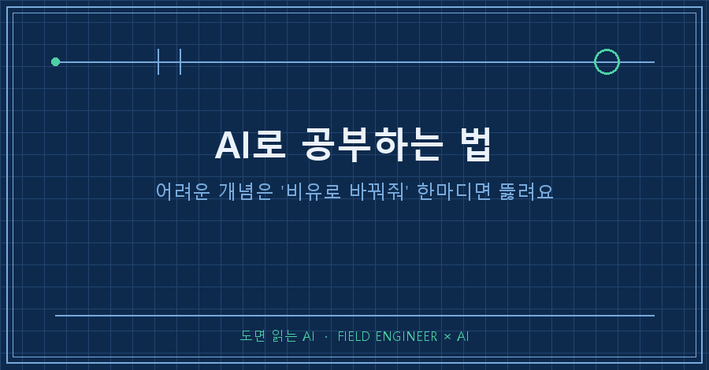
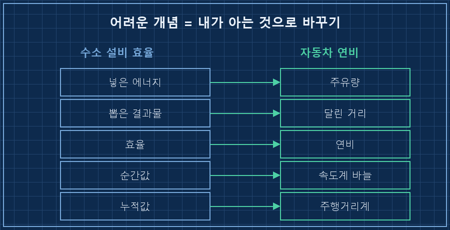
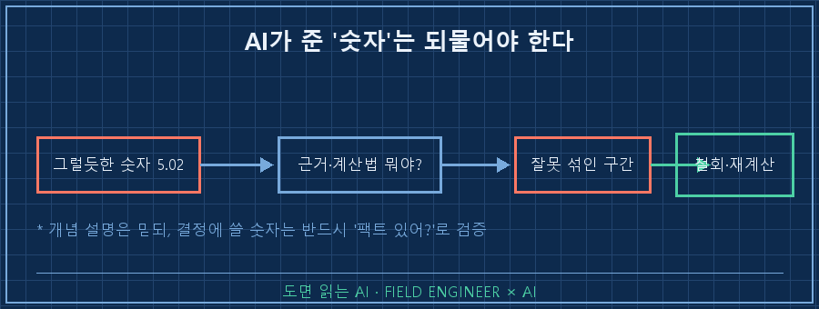

남한테 쉽게 설명 못 하는 건, 사실 내가 제대로 모르는 거잖아요.
얼마 전 저는 제 전문 분야 계산 하나를 딱 그렇게 못 하고 있었어요.
그때 AI로 공부하는 법을 하나 제대로 익혔는데, 핵심은 딱 한마디였어요.
"그거 자동차 연비로 비유해서 설명해줘."
저는 수소 설비를 만드는 15년차 제어 엔지니어예요.
판넬 설계하고 PLC 코드 짜는 게 본업인데, 요즘은 어려운 계산이나 개념 정리도 AI랑 같이 해요.
이 글은 몇 년을 어렴풋이 알고 넘어가던 개념 하나를, AI랑 문답으로 바닥까지 파고든 이야기예요.
1. 전문가인 척했지만 사실 얼버무리고 있었어요
제 분야에 '효율'을 따지는 계산이 하나 있어요.
쉽게 말하면 에너지를 얼마 넣어서 결과물을 얼마 뽑았냐를 재는 건데요.
설비가 항상 같은 세기로 도는 게 아니라 상황 따라 세졌다 약해졌다 하니까, 이걸 어떻게 하나의 숫자로 뭉쳐야 하는지가 늘 애매했어요.
그래서 AI한테 물었더니, 이런 답이 왔어요.
나: 부하가 계속 변하는데 효율을 어떻게 하나로 계산해?
AI: 구간별 적산값을 시간 가중으로 취합하여
순시 효율의 시계열을 적분한 뒤...
나: 아니, 이해가 안 돼. 더 쉽게.식은 맞는 말인데, 머리에 안 들어왔어요.
아는 것 같은데 남한테 설명은 못 하는, 딱 그 상태였죠.
2. "자동차 연비로 설명해줘" 한마디가 다 뚫었어요
그래서 제가 요즘 자주 쓰는 카드를 꺼냈어요.
"비유로 바꿔줘."
정확히는 "이걸 자동차 연비로 설명해줘"라고 했어요.
그랬더니 갑자기 그림이 그려지더라고요.
한 달 동안 주유소에서 넣은 기름 총량을, 그달 달린 총 거리로 나누면 그게 내 연비잖아요.
매 순간 연비가 오르락내리락해도, 한 달 치를 통으로 나누면 대표 연비 하나가 나오죠.
효율도 똑같았어요. 순간순간 값을 억지로 붙잡을 게 아니라, 한 달 치를 통으로 나누면 되는 거였어요.
여기서 비유가 계속 가지를 쳤어요.

- 순간값과 누적값의 차이? 속도계와 주행거리계의 차이더라고요.
- 카탈로그에 적힌 효율과 실제 현장 효율의 차이? 공인연비랑 실연비 차이였고요.
- "지금 이 순간 효율이 최고다" 같은 말의 함정? 급가속하는 찰나의 연비를 대표 연비라고 우기는 거랑 같았어요.
비유 하나가 열리니까, 제가 몇 년을 얼버무리던 개념이 30분 만에 제자리를 찾아갔어요.
3. 근데 AI가 내놓은 '실측 숫자'가 함정이었어요
여기까지는 AI가 참 똑똑한 선생님이었어요.
문제는 그다음이었죠.
개념이 잡히니까 실제 숫자로 확인하고 싶어졌어요.
AI가 그럴듯한 결과값을 하나 턱 내놨는데, 5.02 같은 딱 떨어지는 소수점 숫자였어요.
너무 깔끔해서 오히려 걸렸어요. 그래서 물었죠.
나: 그 숫자 팩트 있어? 어떤 데이터로, 어떻게 계산했어?
AI: (재검토 중...)
AI: 확인 결과, 계산에 쓰면 안 되는 구간이
섞여 있었습니다. 앞선 수치를 철회합니다.AI가 자기 숫자를 스스로 철회했어요.

설비가 아예 멈춰 있던 구간까지 계산에 끌어다 쓴 거였어요.
멈춰서 기름만 새던 시간을 주행에 넣고 연비를 잰 꼴이죠.
"팩트 있어?" 한마디에 그럴듯한 숫자가 무너진 거예요.
4. AI는 답 기계가 아니라 소크라테스식 선생님이더라고요
이날 제가 배운 건 두 가지였어요.
하나. AI한테 개념을 물을 땐 "쉽게 설명해줘"보다 "OO로 비유해줘"가 훨씬 세요.
비유는 AI가 제일 잘하는 일이고, 내가 이미 아는 세계(자동차)에 새 개념을 얹어주거든요.
둘. AI가 준 '개념'은 믿되, AI가 준 '숫자'는 반드시 되물어야 해요.
개념 설명은 틀려도 금방 티가 나는데, 숫자는 그럴듯하면 그냥 믿게 되거든요.
그래서 저는 숫자가 나오면 습관처럼 물어요. "그거 어떻게 계산했어? 근거 데이터 뭐야?"
| 구분 | AI가 잘하는 것 | 내가 꼭 해야 하는 것 |
|---|---|---|
| 개념·비유 | 어려운 걸 아는 것에 빗대주기 | 비유가 맞는지 되짚기 |
| 숫자·계산 | 빠르게 값 뽑기 | "근거 있어?"로 검증 |
| 최종 이해 | — | 결국 내 손으로 다시 풀어보기 |
마지막엔 결국 제가 직접 손으로 계산기를 두드려서 같은 답이 나오는 걸 확인했어요.
그제야 이 개념이 온전히 제 것이 됐고요.
AI가 옆에서 계속 비유를 바꿔주지 않았다면, 저는 아직도 얼버무리고 있었을 거예요.
자주 묻는 질문
Q. "쉽게 설명해줘"랑 "비유로 설명해줘"가 그렇게 달라요?
체감상 꽤 달라요. "쉽게"는 AI가 그냥 단어만 쉬운 걸로 바꾸는 경우가 많은데, "OO로 비유해줘"는 내가 이미 아는 영역으로 개념을 통째로 옮겨줘요. 자동차, 요리, 물탱크처럼 내가 잘 아는 걸 지정해주면 더 잘 통하고요.
Q. AI가 준 숫자, 매번 검증하기 번거롭지 않나요?
전부는 아니고 '결정에 쓸 숫자'만 걸러요. 판단의 근거가 될 값이면 "어떤 데이터로 어떻게 계산했는지" 한 번 되묻는 거죠. 이 한 질문이 나중에 큰 실수를 막아줘요. 실제로 저는 이걸로 잘못 섞인 계산을 그 자리에서 걸러냈고요.
혹시 AI한테 뭘 물어도 겉만 맴돈다 싶으면, 다음엔 "내가 아는 OO로 비유해서 설명해줘"라고 한번 던져보세요. 저는 이렇게 AI랑 씨름하며 배운 것들을 makefield.ai에 적어두고 있어요.
---
태그: #AI로공부하는법 #AI학습법 #AI개념이해 #AI공부 #챗GPT공부 #AI팩트체크 #AI검증 #AI비유설명 #AI활용법 #AI실무 #현장엔지니어 #제조업AI #엔지니어AI #AI튜터 #도면읽는AI